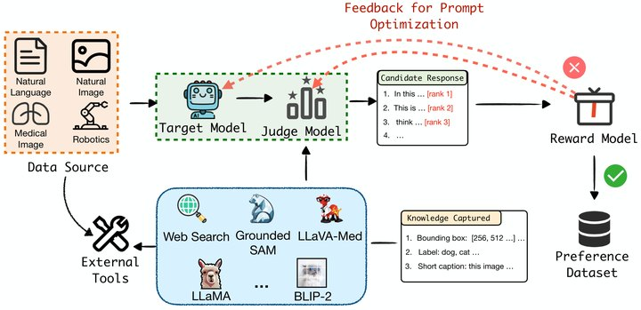

Kaiyuan Zheng
PhD Student, Electrical & Computer Engineering, University of Washington
I am a PhD student in Electrical & Computer Engineering at the University of Washington, advised by Radha Poovendran and Linda Bushnell. I also received my B.S. and M.S. from UW. My research focuses on machine learning and multimodal systems, especially video world models and robot learning.
At the NVIDIA GEAR Lab, I am advised by Yuke Zhu and Jim Fan, and have worked closely with Guanzhi Wang and Joel Jang on world models for generalist robots, including DreamZero, DreamDojo and DreamGen.
News
- 2026DreamZero is accepted to CoRL 2026 as an oral presentation.
- 2026DreamDojo is accepted to ICML 2026 as a Spotlight.
- We released DreamZero, a 14B world action model for zero-shot robot control, with open weights and code.
- We released DreamDojo, a generalist robot world model pretrained on 44k hours of egocentric human video.
- 2026GRAPE is accepted to ICRA 2026.
- 2025DreamGen is accepted to CoRL 2025, ReBot to IROS 2025 as an oral, and Anyprefer to ICLR 2025.
Publications
* core contributor, † co-first author, ‡ project lead
-
World Action Models are Zero-shot Policies
Seonghyeon Ye‡, Yunhao Ge*, Kaiyuan Zheng*, Shenyuan Gao*, Sihyun Yu*, George Kurian*, Suneel Indupuru*, You Liang Tan*, … Yuke Zhu‡, Linxi Fan‡, Joel Jang‡
CoRL 2026 OralDreamZero, a 14B world action model that jointly predicts video and robot actions, generalizing zero-shot to unseen tasks and environments with real-time closed-loop control.
-
DreamDojo: A Generalist Robot World Model from Large-Scale Human Videos
Shenyuan Gao†, William Liang†, Kaiyuan Zheng*, Ayaan Malik*, Seonghyeon Ye, Sihyun Yu, … Yuke Zhu‡, Joel Jang‡, Linxi Fan‡
ICML 2026 SpotlightA foundation world model pretrained on 44k hours of egocentric human video that simulates dexterous, contact-rich robot interactions in real time.
-
GRAPE: Generalizing Robot Policy via Preference Alignment
Zijian Zhang†, Kaiyuan Zheng†, Zhaorun Chen†, Joel Jang, Yi Li, Siwei Han, Chaoqi Wang, Mingyu Ding, Dieter Fox, Huaxiu Yao
ICRA 2026Aligns vision-language-action policies with trajectory-wise preference optimization, improving generalization and supporting goals such as safety and efficiency.
-
DreamGen: Unlocking Generalization in Robot Learning through Video World Models
Joel Jang, Seonghyeon Ye, Zongyu Lin, Jiannan Xiang, Johan Bjorck, Yu Fang, Fengyuan Hu, … Kaiyuan Zheng, Ruijie Zheng, … Yuke Zhu, Linxi Fan
CoRL 2025Trains robot policies on synthetic trajectories generated by video world models, so they generalize to new behaviors and environments.
-
ReBot: Scaling Robot Learning with Real-to-Sim-to-Real Robotic Video Synthesis
Yu Fang, Yue Yang, Xinghao Zhu, Kaiyuan Zheng, Gedas Bertasius, Daniel Szafir, Mingyu Ding
IROS 2025 OralScales robot learning by synthesizing realistic robot videos through a real-to-sim-to-real pipeline.

Anyprefer: An Agentic Framework for Preference Data Synthesis
Yiyang Zhou, Zhaoyang Wang, Tianle Wang, Shangyu Xing, Peng Xia, Bo Li, Kaiyuan Zheng, Zijian Zhang, Zhaorun Chen, … Mohit Bansal, Huaxiu Yao
ICLR 2025Synthesizes high-quality preference data by casting the target model and a tool-assisted judge model as players in a cooperative game.